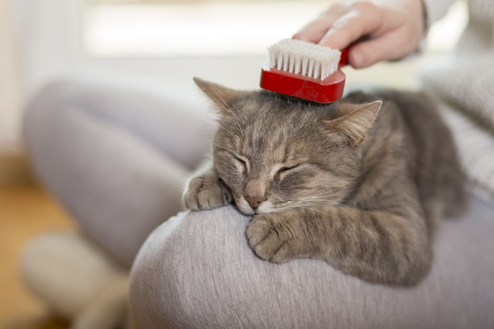
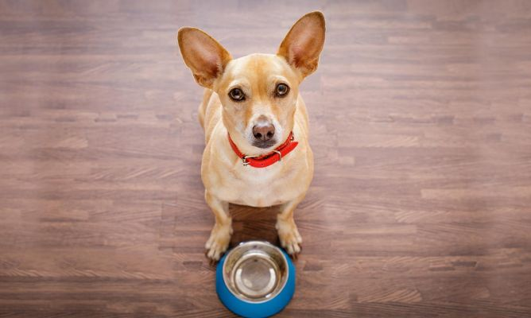

Caída del pelo en los gatos y problemas con las bolas de
pelo

La caída del pelo en los gatos es muy habitual sobre todo en
primavera. A continuación veremos varios consejos para evitar
problemas con las bolas de pelo.
Por lo general, la mayoría de los gatos pierde mucho pelo durante
todo el año, pero en primavera, esta caída del
pelo se acentúa. Por ello, sean gatos de pelo
largo o gatos de pelo corto, es muy importante seguir ciertas
pautas para evitar mayores problemas a consecuencia del pelo.
Puede llegar a ocurrir, que si no cepillamos al
gato diariamente, se le tenga que cortar el pelo para evitar que al
lamerse el cuerpo se le creen bolas de pelo en el estómago. Además,
también se le pueden formar nudos que provocarán mayores problemas
a la mascota. Todo suele derivar en problemas intestinales ya que
pueden llegar tragar tal cantidad de pelo que no son capaces de
digerir ni de liberar.
Para evitar problemas en los gatos por la caída
del pelo, se recomiendan varias pautas concretas. Por un lado, es
muy importante que el gato lleve una correcta alimentación. En el
mercado existen alimentos específicos que previenen las bolas de
pelo en el estómago. Estos alimentos favorecen la calidad del pelo
del gato y la salud de la piel. Así, logramos que el gato desprenda
menos pelo y a la vez que trague menos. Además, este tipo de pienso
también es muy adecuado para un correcto tránsito y así eliminar el
pelo y evitar la formación.
Otra de las medidas que se deben tomar, y la más básica, es
el cepillado diario del pelo. Los gatos, tienden a lamerse mucho el
cuerpo, y a raíz de lamerse tanto el cuerpo, tragan demasiado pelo.
Si nos acostumbramos a cepillarles el pelo una vez al día, todo el
pelo que recojamos con el cepillo, no acabará en el estómago de la
mascota.
Alimentación para perros con digestiones sensibles
Algunos perros sufren digestiones más sensibles de
lo normal y necesitan una alimentación especialmente formulada
para ellos.
Este tipo de alimentos suelen tener carne
de cordero como primer ingrediente, ya que es muy fácil
de digerir. Contiene, además, otros ingredientes
especiales para las digestiones sensibles como:
- Bentonita, una arcilla nutricional que
actúa como si fuera una venda dentro del intestino protegiendo
contra las toxinas y absorbiendo agua de manera que las heces
salen más compactas.
- Una combinación especial de fibras que
también ayudan a compactar las heces.
- Huevo, muy fácil de digerir para que el
intestino trabaje menos.
¿Cuántas veces al día debe comer un perro?

La cantidad de comida de los perros es muy importante. ¡Es
una de las claves de su salud! Nuestro amigo de cuatro patas nos
pediría comida a todas horas, pero ¿cada cuánto tiempo deberíamos
darle su ración? ¡Conoce todas las cantidades que necesita en cada
etapa!
La salud de tu perro depende tanto de la calidad como de la
cantidad de su comida. Por eso, además de ofrecer a tu peludo un
pienso personalizado, es importante repartir su alimentación diaria
en el número correcto de tomas.
¿Cuántas veces al día come un perro según su edad?
La etapa vital de tu perro es determinante para saber cuántas
tomas diarias de comida debes darle a tu peludo:
Cachorros
Hasta los 3-4 meses, se recomienda repartir la
ración de comida diaria de los cachorros en 4 tomas al día. A
partir de los 4 meses de edad el cachorro puede pasar a comer en 3
tomas. Entre los 6 y los 12 estará preparado para
comer 2 veces al día. Sin embargo, los cachorros de razas muy
pequeñas, como el chihuahua, deben comer hasta 5 veces al día para
mantener estables sus niveles de glucosa en sangre.
Perros adultos
Cuando un perro sano alcanza su etapa adulta, lo recomendable
es dosificar su comida, como mínimo,en 2 raciones diarias
("desayuno" y "cena"). A partir de aquí, iremos adaptando el número
de tomas a su salud y condición física. Por ejemplo, si tu perro
tiene que bajar de peso, tendrás que ofrecerle varias tomas
pequeñas de comida a lo largo del día.
Perro senior
A medida que los perros envejecen, la capacidad de movimiento de su
intestino se reduce y sus digestiones son cada vez más pesadas. Por
eso, cuando un perro llega a su madurez, conviene aumentar
el número de comidas a 3 tomas diarias para facilitar su digestión.
¿Qué otros factores influyen en la frecuencia de
alimentación de un perro?
Además de la edad, hay otrosfactores que pueden modificar el
número de tomas diarias de comida que necesita un perro:
- Esterilización y castración: Los perros
castrados o esterilizados tienen necesidades nutricionales
distintas y son más propensos al aumento de peso. Por eso conviene
adaptar su alimentación y aumentar el número de
dosis a 3 raciones diarias.
- Gestación: A medida que avanza el
embarazo de una perra, es importante adaptar la frecuencia de su
alimentación, ya que cada vez podrá ingerir menos cantidad de
comida en cada toma.
- Sensibilidad digestiva: Para facilitar la
digestión de los perros con sensibilidad digestiva, se recomienda
repartir su ración de comida diaria en 3 tomas al día.
- Ansiedad: En perros con ansiedad conviene
incrementar la frecuencia de alimentación hasta un máximo de 4
raciones diarias.
Además de todo esto, es importante respetar
siempre las mismas horas para cada toma, ya que los perros son
animales de costumbres. Y recuerda que estas recomendaciones son
orientativas. Si tienes alguna duda, pide consejo a tu veterinario,
él es quien mejor puede asesorarte.